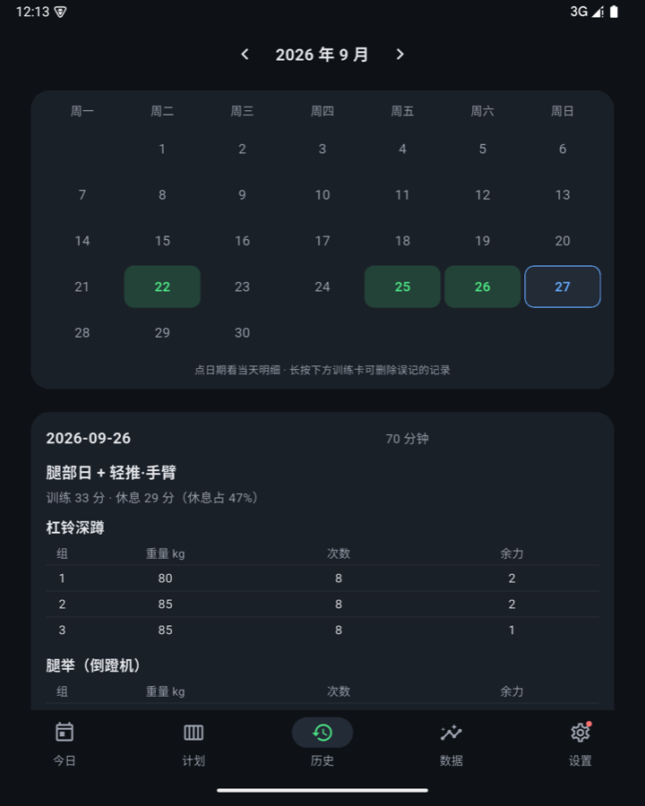
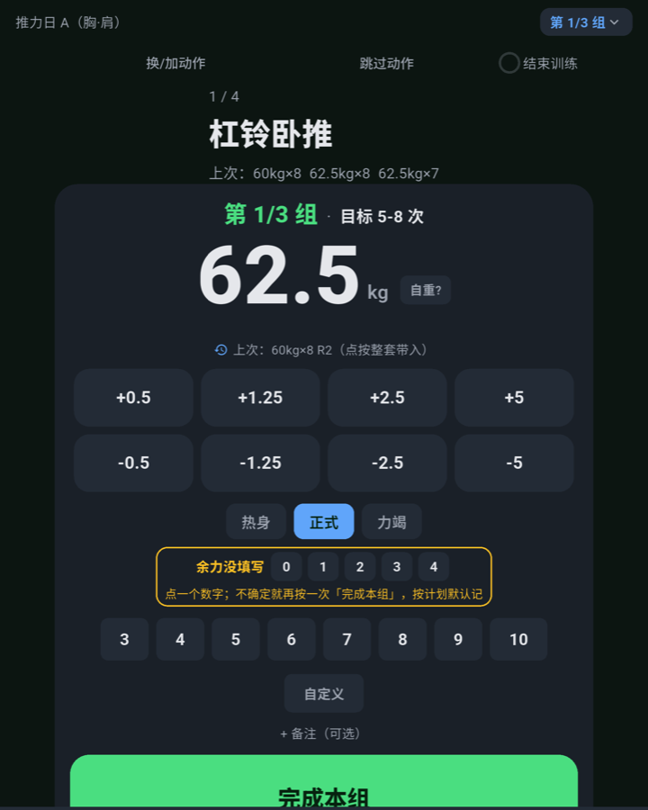

界面速览






完全跑在你手机上的力量训练计时与记录
无服务器 · 数据不出本机 · 中英双语 · 极简防分心
Android 8.0+ · 免费开源 · 无广告 · 无账号
训练最难的不是动作，是坚持记录、练时不分心。别的方案要你注册账号或自建服务器——LeanLift 把一切装进你的手机。
装完即用，不需要架服务器、不需要注册登录，也没有会员弹窗。
训练记录存手机本地 SQLite，不上云、不进别人的数据库，导出导入全在你手里。
训练界面只剩三要素：当前动作、本组目标、倒计时。完成一组靠震动确认，不用读屏。
界面与全部 193 个动作要点都带中英文，跟随系统或手动切换。
| LeanLift | 云端 / 自托管平台 | |
|---|---|---|
| 服务器 | 不需要 | 自建或依赖他人 |
| 数据归属 | 100% 本机 | 别人的数据库 |
| 账号 | 没有 | 注册 / 账号系统 |
| 离线 | 全部功能可用 | 核心功能依赖网络 |
| 费用 | 免费开源 | 订阅 / 服务器账单 |
联网只有三件事且全部可选：飞书日历、AI 功能（你自己的 Key）、检查更新。
灵感来自邵艾伦的薄肌理论：低体脂 + 每周三练 + 渐进超负荷。App 把这三件事做成了顺手的大白话工具。
全屏大按钮逐组记录、组间自动倒计时（锁屏照常走）、PR 自动检测、忘停表守护、杠铃片速配、疼痛标记；忙的时候「只有 20 分钟」精简练。
自动判定加/减重量，每组目标旁写着「为什么」；引体与双杠打通「器械辅助 → 自重 → 负重」切换与进阶，兼顾减载、停练回归与破平台。
每周日本地通知：本周完成度、进步与停滞动作、没练到的肌群、体重节奏和一条行动建议——不配 AI 也完整可用。
193 个动作全带中英要点，183 个配起止姿势示范照，14 个核心动作配无声示范视频——训练中也能随时翻出来看。
标准 BLE 心率带即插即用：休息页实时心率、偏高自动提醒多休、点开看本次消耗卡路里与心率曲线，练完可让 AI 解析。
周/月容量·组数·强度趋势、活动热力图、1RM 与相对力量、肌群每周组数目标、恢复度热力图、体重腰围体脂、kg/lb 一键切换。
自配 Key：对话式排计划、AI 教练带 8 周真实记录、每周自动 AI 周报、心率 AI 解析；电脑上的 AI 还能经局域网只读桥直接读你的训练数据。详见下方 AI 章节。
每次练完自动留快照（近 7 天每日 + 4 周每周），恢复前可预览；超 14 天没手动导出会轻声提醒。CSV/JSON 全量导出照旧。
训练日自动写日历、练完回填摘要、离线排队补写——手机直连官方接口。
AI 在 LeanLift 里是「放大器」不是「地基」：不配 Key，上面所有功能照常用；配了 Key（OpenAI 兼容接口，本地 Ollama 也行），它就长在你自己的数据上。
像聊天一样说需求、随时改（「周三没空，挪一天」），AI 每轮给完整计划，满意后逐动作确认才落库。
自动附上近 8 周真实训练记录与自评趋势，一键阶段复盘、随时问答；人设里写死「不诊断伤病、不给忍痛练方案」。
本地周复盘生成后，可选让 AI 把它写成一段人话，随每周通知一起看。前台生成一次、绝不后台联网，没配 Key 自动回退本地版。
局域网只读桥（MCP）：家里 Wi-Fi 内，Claude/Cursor 直接读手机里的训练记录问「我卧推是不是停滞了」。配对一次、只读、数据不出局域网。
Key 只存手机本地，请求直连你选的服务商，无中转服务器。
openGym（DuarteSantos8/openGym）是我们尊重的同路线项目：数据自持、自托管、练什么肌群一目了然——LeanLift 数据页的部分统计口径也借鉴了它。但两者的「数据自持」落在不同的地方，使用画面也因此完全不同。
| LeanLift | openGym（自托管） | |
|---|---|---|
| 部署 | 不需要：装上就用 | 需要一台服务器 / NAS 并自己部署维护 |
| 使用端 | Android App，为「练的时候举着手机」设计 | 浏览器 |
| 练中体验 | 全屏防分心三要素、锁屏倒计时、勿扰、震动确认 | 网页表单记录为主 |
| 教练逻辑 | 渐进超负荷引擎 + 训练块减载 + 停练回归 + 每周复盘 | 记录与统计为主，训练法靠计划模板 |
| AI | 可选自带：排计划 / 教练 / 周报 / 心率解析 / 局域网只读桥 | 无内置 AI |
| 数据自持 | 100% 在手机本地 + 自动备份 + 全量导出 | 100% 在你自己的服务器 |
| 生态 | 飞书日历联动、中英双语、蓝牙心率直连 | 可从 FitNotes / Strong / Hevy 导入 |
一句话：openGym 是「自己服务器上的训练档案」，LeanLift 是「口袋里的教练」——如果你想要零部署、练中不分心、还有个懂你数据的 AI，选 LeanLift。


Android 8.0+ · 覆盖安装不丢数据 · App 内可一键更新（首次授权一次）
iPhone 用户：官方只出 Android，按 AI-BUILD-GUIDE 可自行适配。
是。训练、记录、统计、计划、周复盘、自动备份全部本地运行。联网的三件事（飞书日历、AI、检查更新）都不配也能正常用。
手机本地 SQLite。App 每次练完自动留快照（近 7 天 + 4 周），设置里还有 JSON 全量导出/一键恢复，CSV 也能导。换手机拷一份存档即可。
只有你主动用 AI 功能时，把需要的内容（如近 8 周记录摘要）直接发给你配置的服务商。Key 存本机，无中转服务器；每周 AI 周报默认关闭、打开后也只在前台生成一次。
想零部署、练中防分心、要渐进超负荷引擎和可选 AI——选 LeanLift；已有 NAS/服务器、想在浏览器里管理训练档案、需要从 FitNotes/Strong/Hevy 迁移历史——openGym 也很好。
App 内「设置 → 应用更新」一键升级；或从本页下载最新 APK 覆盖安装，数据不丢。
不要。MIT 开源，无广告无内购无统计。